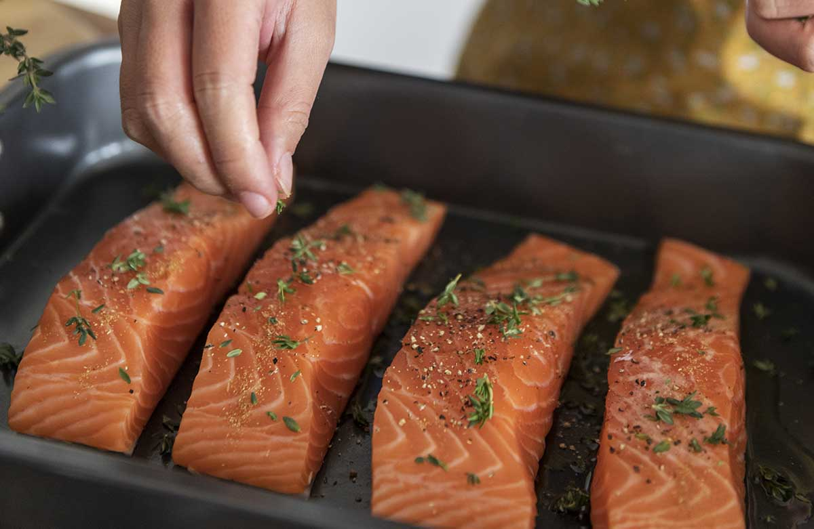

A continuacion les mostraremos como es la preparacion y que ingredientes se usan para este plato
Los ingredientes que necesitaremos seran:
Esto para el salmon
Esto para las verduras
Primero calentaremos el horno a 200 grados por 8 minutos. Mientras se va calentando el horno nosotros forraremos una bandeja de horno con papel de horno o tambien pueden usar una bandeja antiadherente
Lavaremos las verduras y las cortaremos de forma similar para que se cocinen de manera homogenea.
Una vez cortadas las colocaremos en un boul grande y añadiremos 1 cucharada de aceite de oliva, 1 cucharada pequeña de sal y 1 cucharada pequeña de pimienta. Ahora retiramos la bandeja del horno y ponemos las verduras bien extendidas para que se doren bien
Metemos la bandeja con las verduras al horno y las asamos unos 20 o 25 minutos. Deben quedar doradas o al punto que ustedes deseen, pero siempre hay que ir fijandose para que no se quemen
Untamos cada lomo de salmon con las 2 cucharadas de aceite de oliva, tambien le agregaremos 1 cucharada pequeña de sal, 1 cucharada pequeña de pimienta y 1 cucharada de eneldo. Si quieren que coja mas sabor el salmón lo pueden dejar marinando por 20 o 25 minutos.
Una vez terminadas de hornear las verduras las sacamos del horno y ponemos el salmón, lo pondremos unos 12 o 15 minutos a la misma temperatura que las verduras.
Para comprobar el punto del salmón lo que haremos es agarrar un tenedor e introducirlo al salmón, si vemos que se separa facilmente es porque ya esta en su punto, de lo contrario es porque aún falta.
Una vez cocinado el salmon lo sacamos del horno y lo dejamos reposar por 2 o 3 minutos antes de servir asi coge el sabor del jugo que bota
Una porción individual de salmón al horno con verduras asadas (aproximadamente 180 gramos de salmón fresco, 250 gramos de verduras variadas y una cucharada de aceite de oliva) aporta los siguientes valores nutricionales aproximados: Tiene 480kcal, 39g de proteínas, 32g de grasas, 10g de carbohidratos: 10 g y 4g de fibra.
Y siguiendo todos los pasos anteriores el plato deberia de quedar asi: